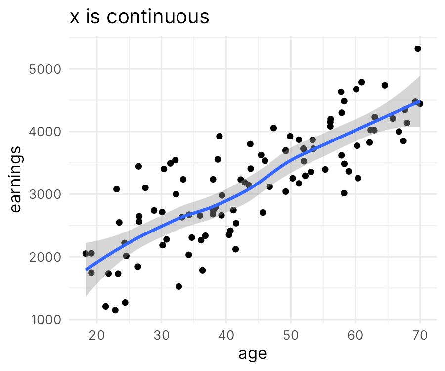
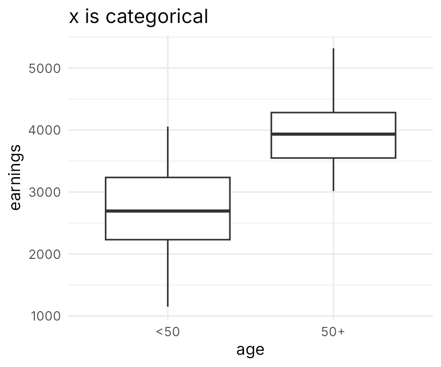
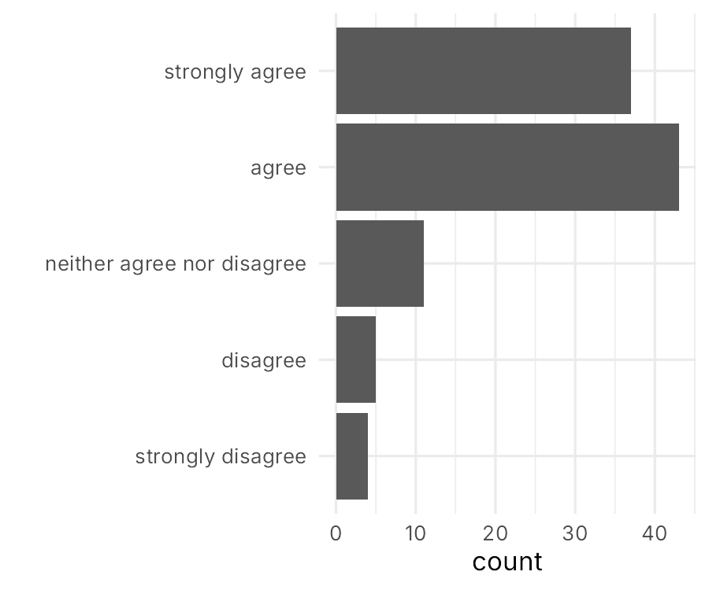
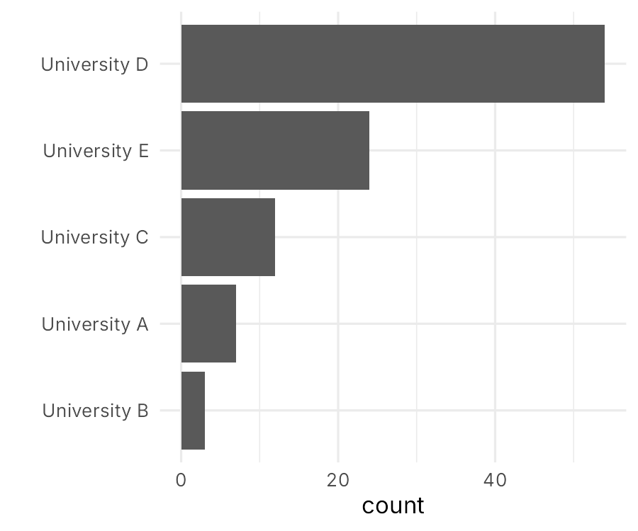
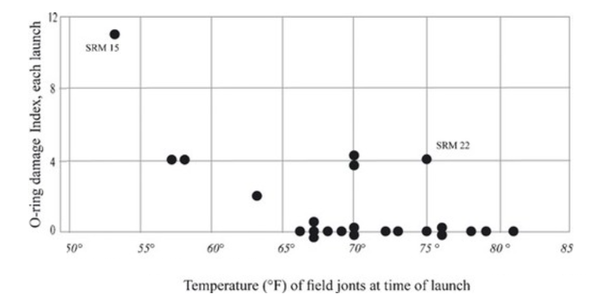
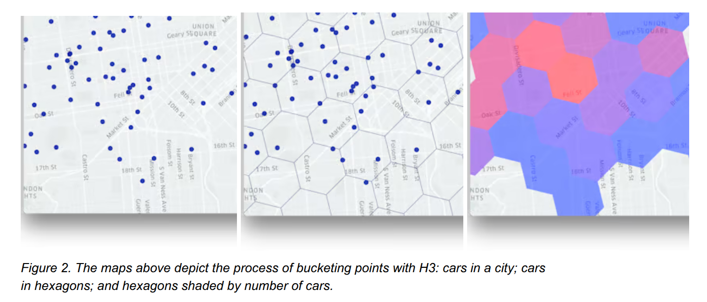
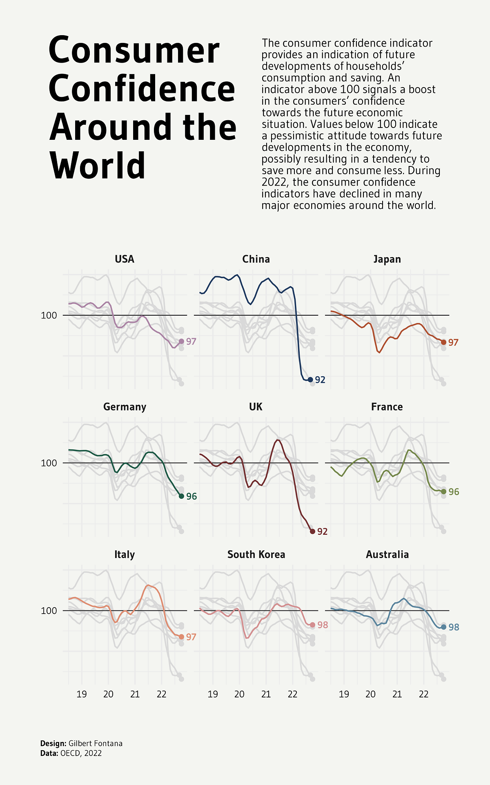
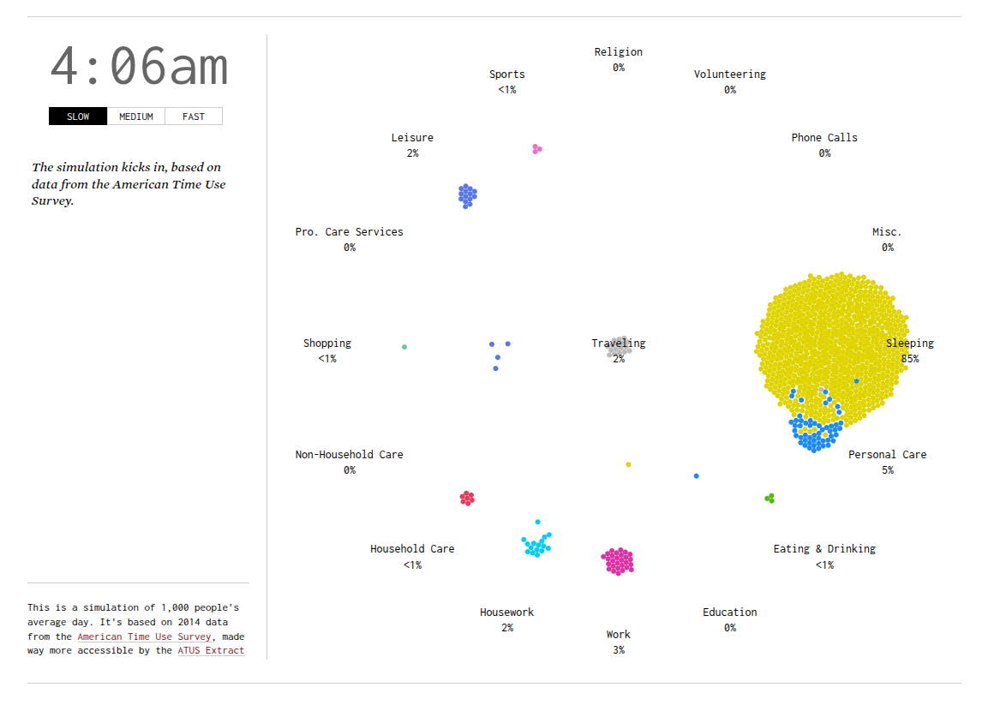
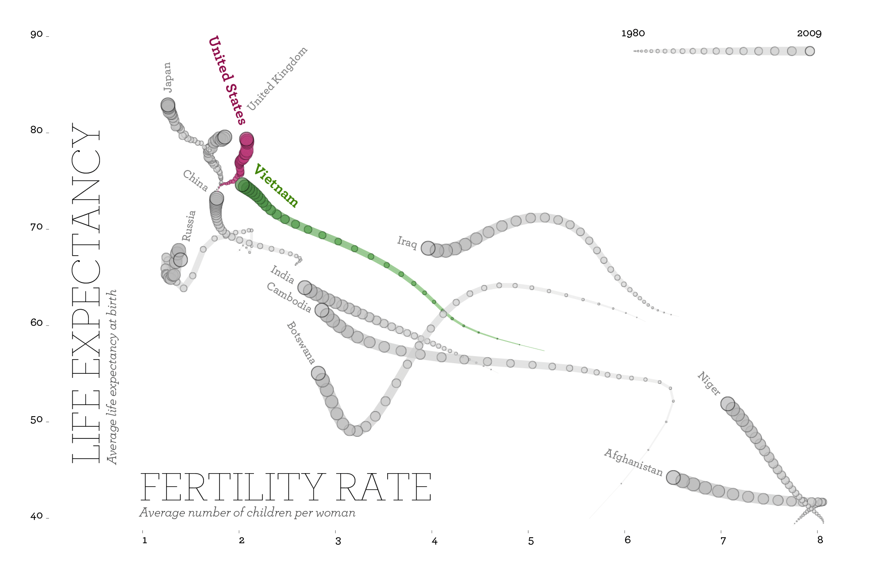

Picking the right type of data visualization
Pedro Cardoso-Leite
How to choose a graph type?
There are many ways to visualize data
You need to know some classics
A principled approach leads to better choices
Typologies of
Data Visualizations
Classification strategies
what structure in the data do you want to show?
what cognitive operations do you want your users to apply on the visualization?
what kind of data do you have?
Other considerations
There’s no algorithm to determine the “best” solution
You need to jointly consider many criteria
You need to think for yourself and make choices
Classification
by Analytic Purpose
What is analytic purpose?
- What structure in the data do you want to show?
- What cognitive operations do you want users to apply?
Classification
by Data Type
The type of data you have
is a major determinant
of data visualization choice.
Common data types:
- Numeric (integer, float; ratio, interval, ordinal)
- Categorical (ordered, unordered)
- Text
- Geospatial data
- Network data
- Dates and time




Chart Choosers
Other Criteria for Choosing Visualizations
Multiple other factors to consider
- Human perception
- Importance hierarchy
- Style and preferences
- Data complexity
- Target audience
- Medium (print, web, presentation)
Managing
Complexity
Complexity?
Data
- Number of observations (rows)
- Number of attributes (columns)
Conceptual
- Difficult/abstract concepts
- Multivariate phenomena
Adjust the level
of complexity
to your target audience
Common strategies to handle complexity
Explain
- annotations
- tutorials
- text
Simplify
- select and focus on key aspects
- compute aggregations
Spread out
- multiple figures, small multiples
- interactive visualization / animations
Example




Interactive examples

How to
Chart chooser tools
- FT Visual Vocabulary
- data-to-viz.com - Comprehensive guide with decision tree
- Highcharts Chart Chooser - Interactive selection
- R Graph Gallery
- Python Graph Gallery
Inspiration (what to avoid)
Inspiration (what to mimic)
Exercise
You have a dataset that contains
- the list of the 500 most common passwords.
- the time needed to crack each password (from seconds to years)
- one of 10 category labels assigned to that password (e.g. animal, sport)
What type of data visualization would you choose for this project?
Mapping multivariate data to graph attributes

Recap
Key takeaways
- Multiple classification systems exist (purpose, data type)
- No single “best” visualization - depends on context
- Consider multiple criteria when choosing
- Use tools and galleries for guidance and inspiration
- Manage complexity through simplification and interaction
- Test and iterate to find what works
Questions?
Your turn
Exercise
Review the 4 images you have selected last time.
- Do those figures use the appropriate type of data visualization?
- Are there other types that would be equivalent or better?
- Justify your answers
Post your work on Moodle as:
- PDF file called
<your_name>_graph_type.pdf - One page per graph (i.e., the image of the graph, the source, and your comments)